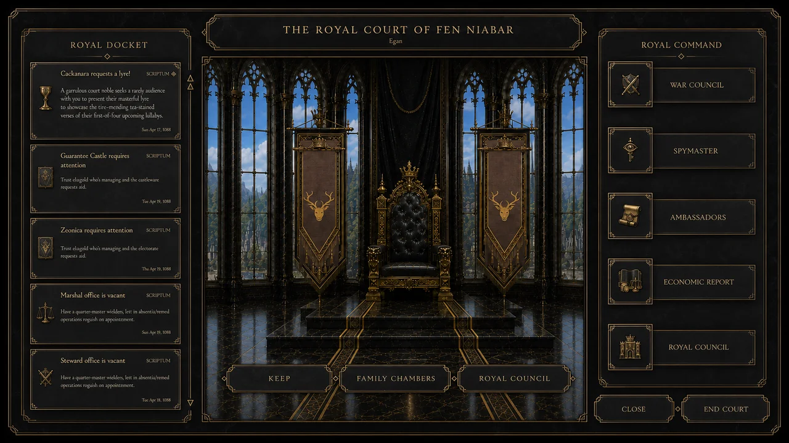
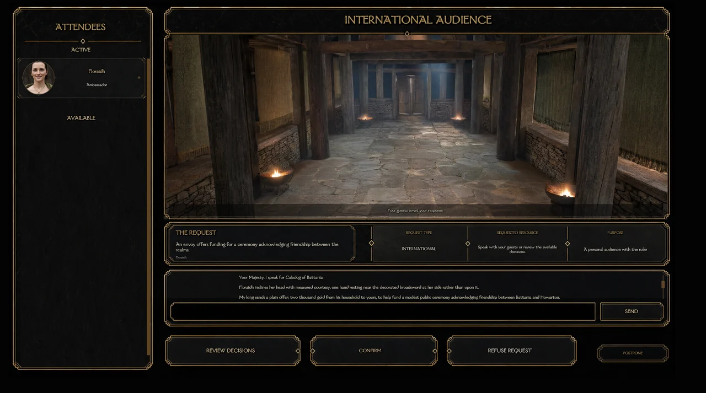
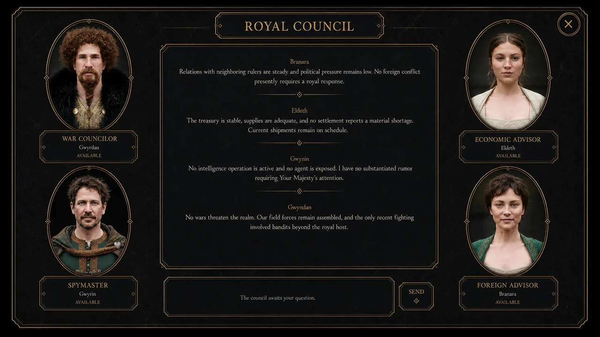
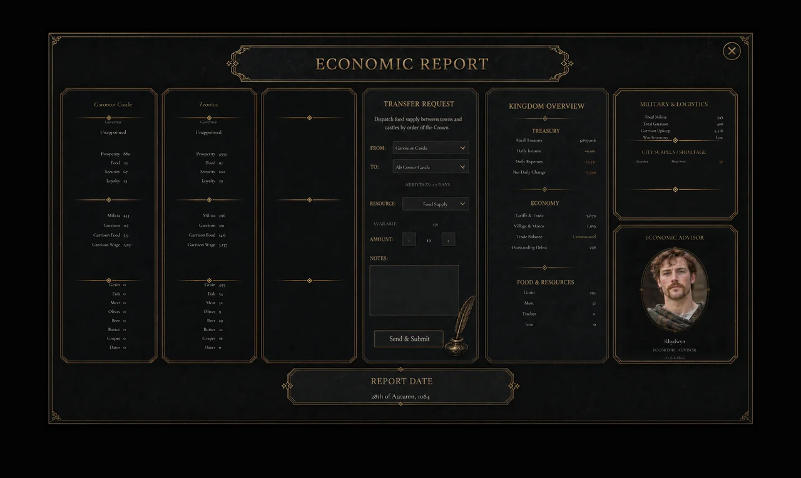

Mount & Blade II: Bannerlord · Reign
Ruling a kingdom
Hold court, hear petitions, appoint officers, and review your kingdom.
Development guide · November 24, 2026 · Edition notes
Capitals and Rule Mode
Preview included#As ruler, use Designate Capital in an eligible town of your kingdom. At a safe kingdom town or castle, Enter Rule Mode opens court business. The capital provides Royal Court with full royal scope; another eligible holding provides a reduced Local Docket. Captivity, siege, and unsafe conditions can interrupt access.
Enable Court System in MCM if the menu is unavailable. A saved setting that turned it off stays off after an update. Owning a castle without ruling a kingdom does not automatically grant full royal authority.
The Royal Court's main areas include Court, Court History, Lands, Subjects, Diplomacy, Ambassadors, Spymaster, and Military, with entrances to Government, Royal Council, Family Chambers, and Castle Layout. Use Lands and the Economic Report to investigate a shortage before deciding how to spend the treasury.
Escape closes the main Court screen. In a supported conversation opened from court, Alt+A opens actions; it is not a shortcut for every Court tab.
The Court window fits itself to your display while keeping its proportions. Recent development work corrects its size on taller displays; check the installed version if yours looks different.

Hearing and deciding petitions
Preview included#Petitions come from actual needs rather than a queue filled with invented emergencies. Core petitions concern food, town funds, village recovery, and soldiers for security. Read the petitioner, settlement, requested aid, and proposed commitment.
Talk with the petitioner, then use the explicit decision: grant direct aid, fund a supported alternative, or refuse. Conversational sympathy alone does not spend the treasury or send soldiers. If you lack the resources, a pending case does not count as fulfilled.
Direct soldier aid detaches real troops while protecting a minimum home defence. An expedition can suffer losses and returns through its recorded route or a safe fallback. Gold alternatives can be costly because they fund the replacement work, not merely the face value of a few items. Petitions do not simply vanish because you postponed them.

This audience concerns an envoy's offer to fund a friendship ceremony. Talking through an offer and confirming a decision are separate steps; read the final terms before confirming.
Noble disputes, visitors, and patronage
Preview included#Court life also includes noble disagreements over precedence, insult, scandal, family affairs, property, and more serious misconduct. Hear each actual principal, consider the known evidence, and read the available ruling. A losing side can accept, resent, or resist your judgment. An accusation does not automatically establish the accused behavior or its reputation.
Foreign court matters use the relevant international participants and authority. A local household quarrel is not permission to commit another kingdom to a treaty. Native marriage, custody, imprisonment, or death still needs its actual supported game action; conversation cannot bypass it.
In international audiences, Review Decisions can show a ruler's exact terms or a counteroffer. A visitor may convey a ruler's position while confirmation is still pending. Review the current terms and use Confirm when the decision is ready. If a noble hearing closes or the case changes, reopen the current judgment from Court history before taking a follow-up decision.
Noble visitors can make courtesy calls, introduce themselves, or bring family introductions. A reserved visit can temporarily make someone unavailable for an office or other duty. A social introduction is not an accepted marriage.
Patronage brings artists and supported commissions into court life. Review the named work, price, and delivery before funding it. Discussion alone does not grant a commissioned work or its benefits; only a properly paid supported commission does. Some audiences provide characterization without a mechanical reward.
Chancellor and delegation
Preview included#Ask an eligible person in direct conversation to become Chancellor, agree on pay, and review the appointment. The Chancellor is a capital-resident docket office, separate from the Royal Council seats. It may require leaving an incompatible governorship or field command.
Appointment begins inactive. Activation and deactivation take effect at the next scheduled morning docket boundary, rather than immediately rewriting the day. Active service costs its agreed daily salary and suppresses ordinary petitions. Unpaid service cannot continue indefinitely.
Delegating often can give you the social appearance of an absent ruler. Captivity has an emergency Chancellor lifecycle and a handoff after release. The old Regent is retired; historical Regent entries do not mean that office still governs your current court.
Offices and the Royal Council
Preview included#Court work depends on capable, loyal, trustworthy people as well as skill. Steward, Economic Advisor, Foreign Advisor, Marshal, and Spymaster duties use different talents. Absence and conflicting duties matter. Do not assume appointing the highest visible skill guarantees the best outcome.
The Royal Council has War Councilor, Spymaster, Economic Advisor, and Foreign Advisor seats. One person cannot occupy every major seat. Select the War Councilor through the War Council. Economic and Foreign Advisors must be eligible and available for residence at the capital.
Ask the relevant advisor for a briefing or a fuller explanation. Advice is advisory: it does not issue a war order, pay a grant, change a treaty, or secretly settle a relationship. Only present participants share that council conversation.

Economic reports and court supply
Preview included#Open the Economic Report to inspect the realm's condition, including food and military burdens. Hover food information for reserve and projected-shortage explanations. Compare actual village output with healthy output; a town's full market is not the same as its settlement food reserve.
Court transfers require actual stock, money, a valid route, and the necessary ownership or consent. A negotiated shipment is not free food. Spent resources and incoming cargo must be accounted for before you assume another grant is affordable.
If workshop or caravan profit is marked unmeasured, read that as unavailable ledger information rather than zero earnings. See Economy and survival for how population, relief, and military costs interact.
